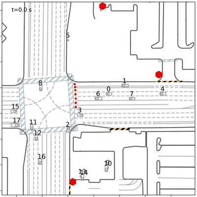
Teacher
Simulation 1dc26b75
Violate signals
1College of Transportation & Key Laboratory of Road and Traffic Engineering of Ministry of Education, Tongji University, Shanghai, China
Overview of the proposed Causal Driving Pattern Transfer framework.
Traffic simulation is essential for validating the safety and reliability of autonomous driving systems, yet data-driven simulation methods often struggle with distribution shifts, limiting their generalizability across diverse datasets (domains). To address this, we present Causal Driving Pattern Transfer (CDPT), a novel two-stage knowledge distillation framework built upon diffusion model to enhance cross-domain generalizability.
In Phase I, we implement hybrid self-distillation within the source domain by integrating feature-, response-, and contrastive-level distillation, which enables the model to decompose complex driving behaviors into their core causal components, including scene-conditioned driven patterns, multi-agent interaction dynamics and casual saliency.
In Phase II, we introduce a continual distillation strategy: few-shot samples from the target domain are used to initiate generation of diverse synthetic scenarios, allowing the student model to continually adapt to novel environments without retraining on large-scale data.
Extensive experiments demonstrate that CDPT achieves strong generalization in both open-loop and closed-loop simulations, effectively generating realistic, interaction-aware behaviors that are critical for scalable and reliable autonomous driving testing.
Closed-loop simulation evaluates the model's ability to generate realistic interaction behaviors for AV testing, where AVs replay observed trajectories from the WOMD, and background vehicles (BVs) are simulated to create realistic traffic interactions. We assess performance on 914 unseen WOMD scenarios.

Violate signals
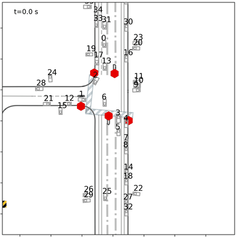
Static and erratic behaviors
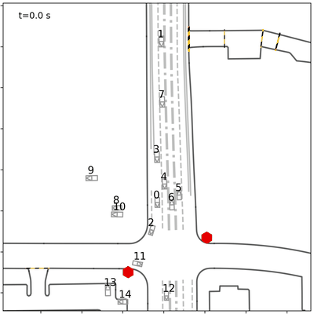
Multi-agent crashes
Stops at red lights and yields correctly
Smooth left turn and stable
Smooth merge without collisions
To evaluate model generalization in diverse traffic environments, we conduct closed-loop simulation experiments on 498 dense, interaction-heavy scenarios from the INTERACTION dataset, contrasting with WOMD scenarios.
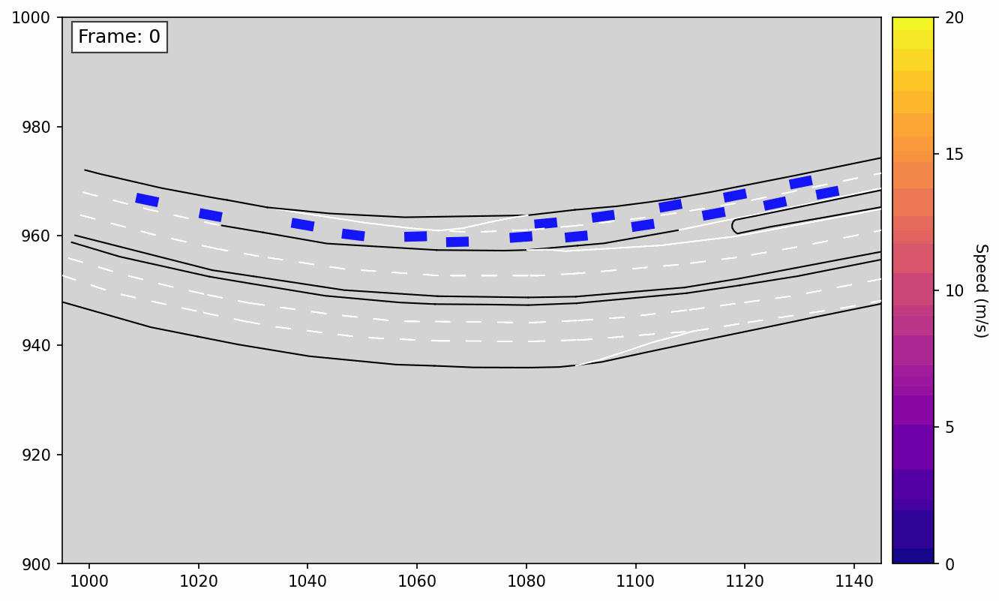
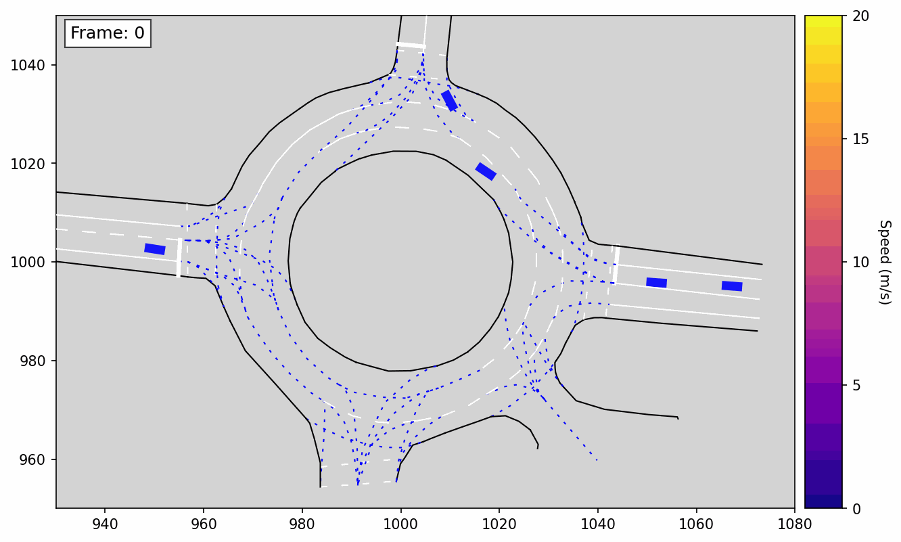
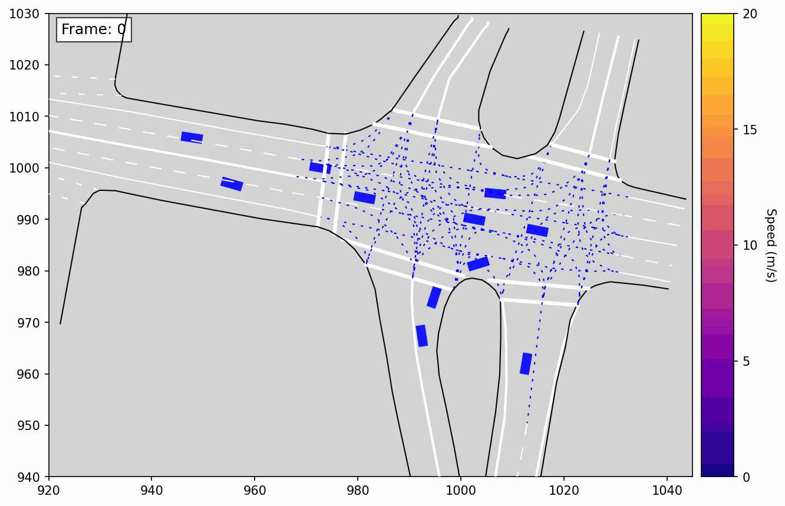
Furthermore, we evaluate the effectiveness of the CDPT framework in closed-loop AV testing using the OnSite platform, a standardized benchmark for zero-shot scenario generation and safety-focused simulation. Each test case provides a high-definition map and a 31-frame prefix of agent states, requiring models to synthesize full traffic scenes based solely on partial observations. The benchmark includes a wide range of traffic scenarios such as merges, roundabouts, signalized intersections, and urban environments with vulnerable road users.
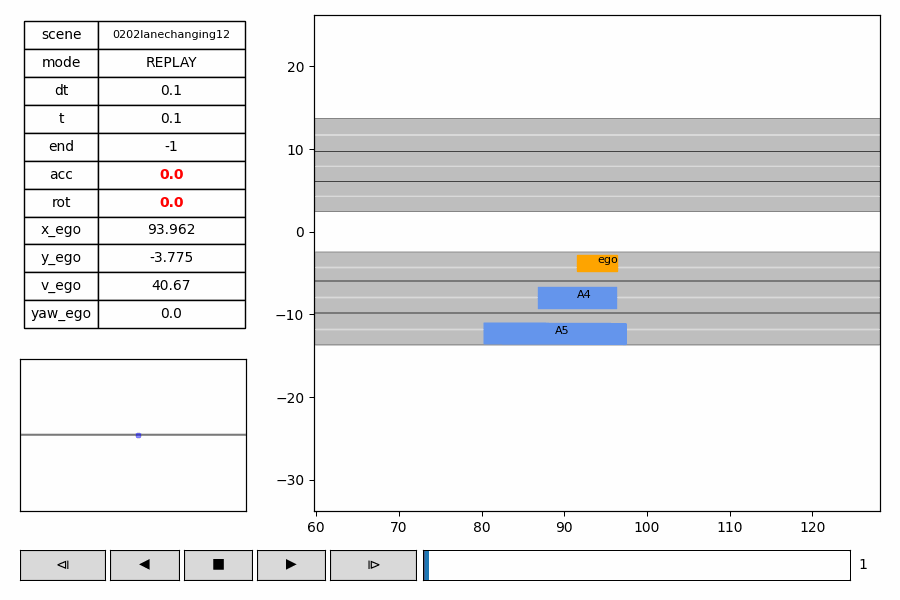
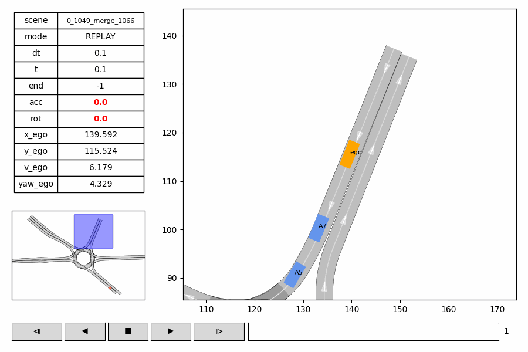
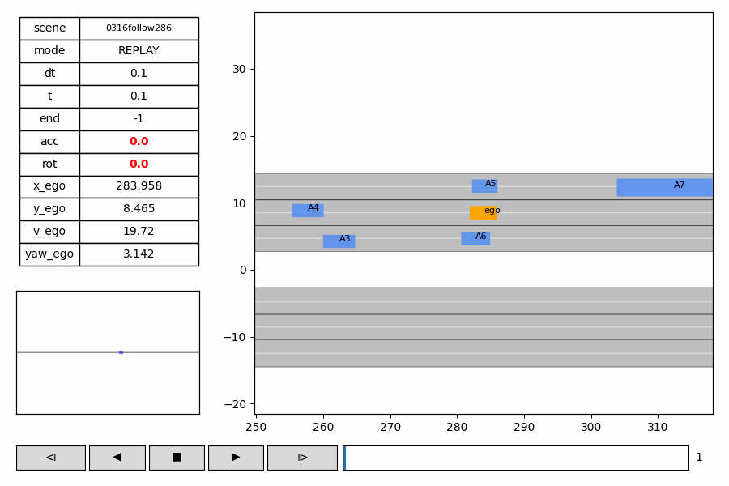
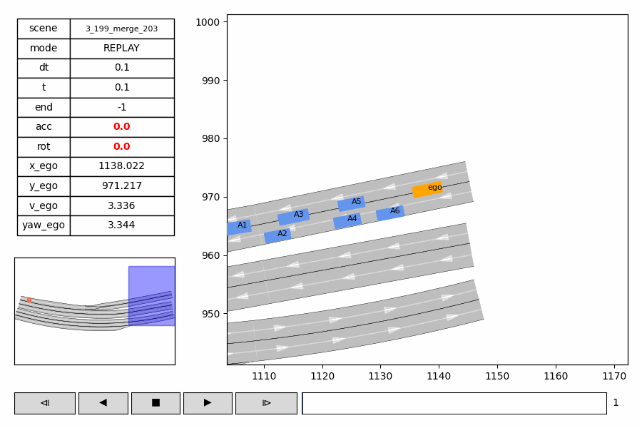
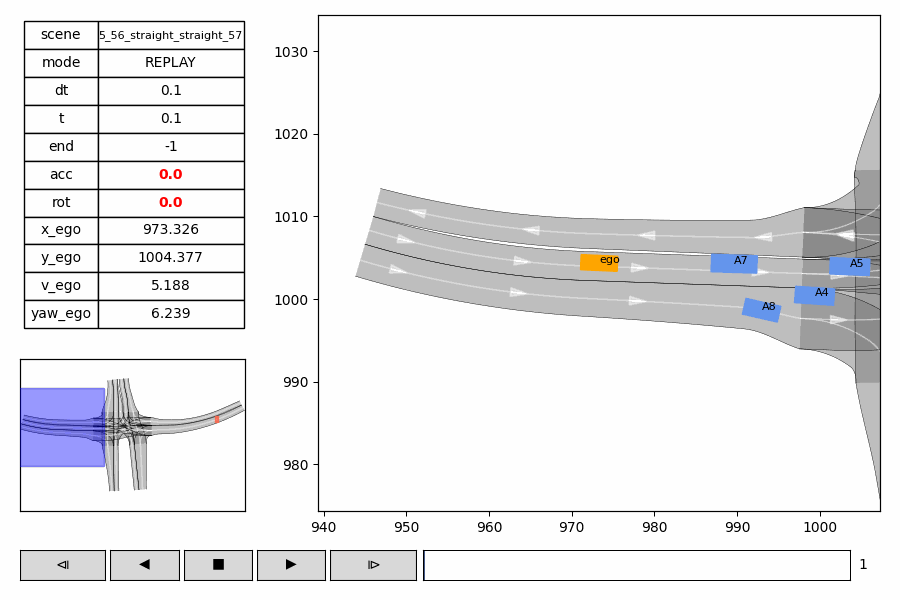
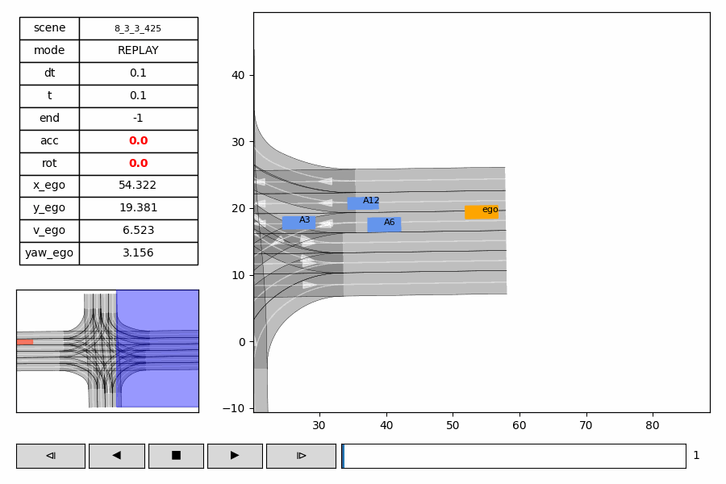
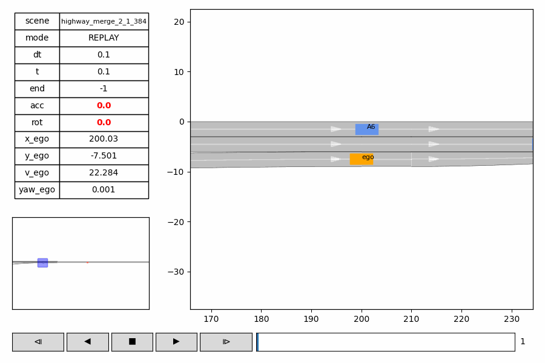
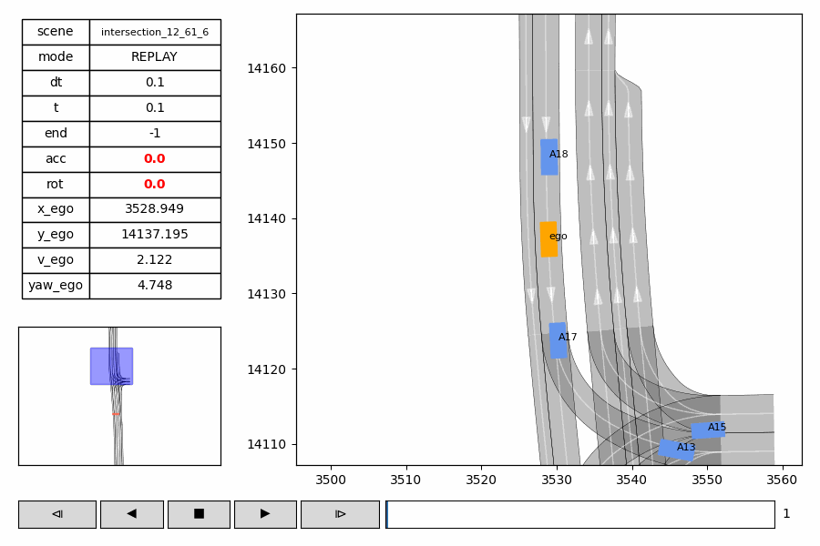
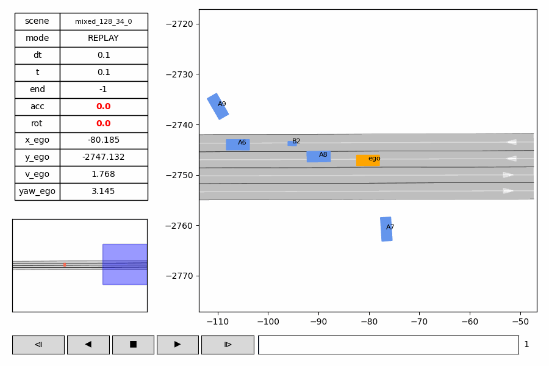
@inproceedings{chen2026transferring,
title={Transferring Causal Driving Patterns for Generalizable Traffic Simulation with Diffusion-Based Distillation},
author={Chen, Yuhang and Sun, Jie and Fan, Jialin and Sun, Jian},
booktitle={Proceedings of the AAAI Conference on Artificial Intelligence},
volume={40},
number={1},
pages={110--118},
year={2026},
doi={10.1609/aaai.v40i1.36970},
url={https://doi.org/10.1609/aaai.v40i1.36970}
}